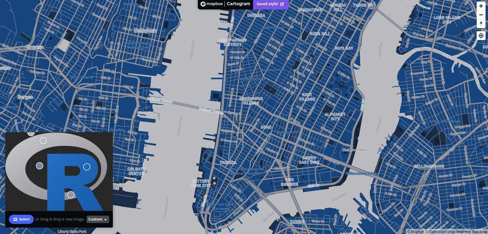
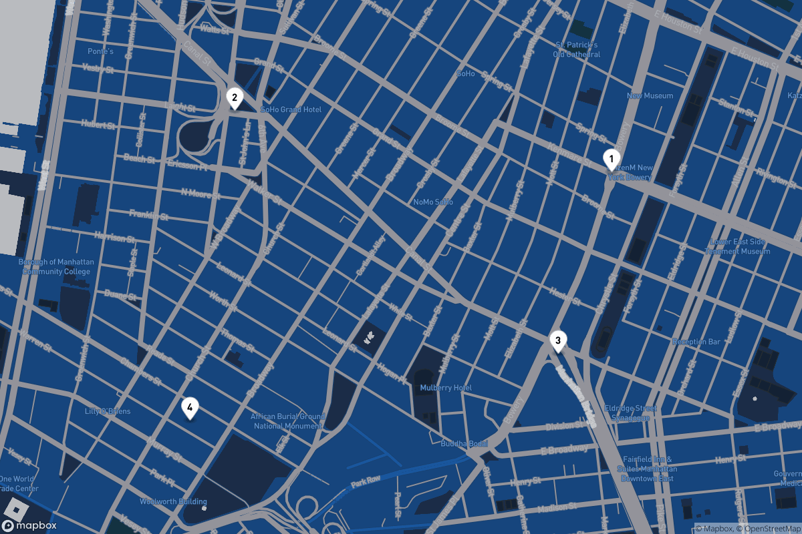
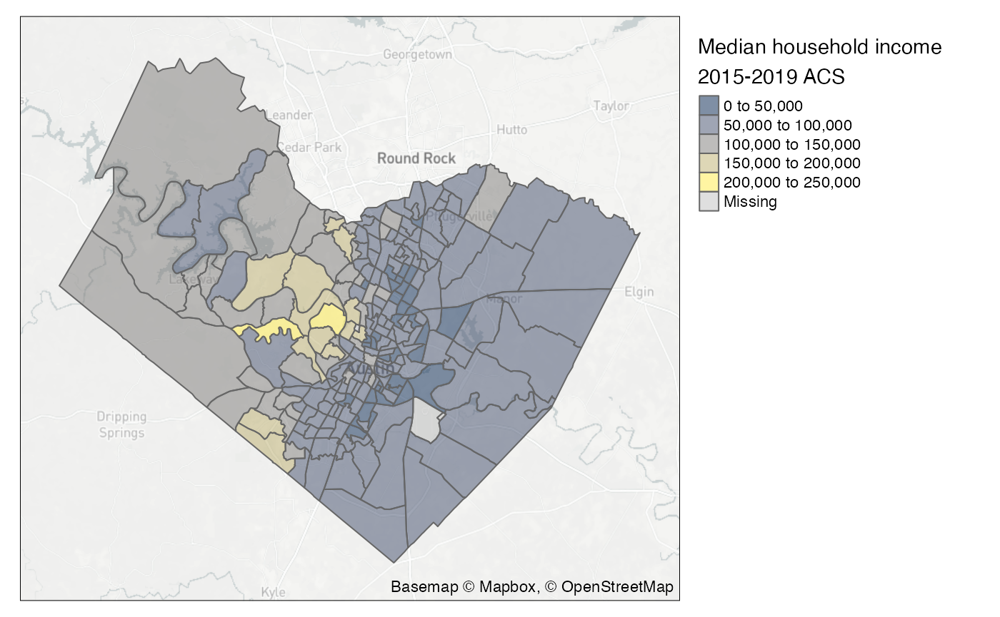

mapping.RmdWhile mapboxapi is not an interface to Mapbox GL JS, the Mapbox JavaScript library for web mapping, it does have functionality for map-making and visualization in combination with your spatial analysis workflows.
Let’s say that you’ve designed a custom map style in Mapbox Studio that you’d like to incorporate into your R projects. In this example, I’ll use Mapbox’s Cartogram tool to generate a custom map style from the R logo.

I can retrieve the style ID from my Mapbox account, or use the list_styles() function in mapboxapi to get the ID. With the style ID and my Mapbox username, the addMapboxTiles() function allows for direct incorporation of this style in an R Leaflet project.
library(leaflet) library(mapboxapi) leaflet() %>% addMapboxTiles(style_id = "ckb83x2ur02oa1hpiq9zdt1i2", username = "kwalkertcu") %>% setView(lng = -74.0051, lat = 40.7251, zoom = 13)
In some cases, you may be more interested in a static map rather than an interactive one. Static maps can be generated in mapboxapi with the static_mapbox() function. This function accepts sf polygon/linestring (of limited size) or marker overlays.
points_of_interest <- tibble::tibble( longitude = c(-73.99405, -74.00616, -73.99577, -74.00761), latitude = c(40.72033, 40.72182, 40.71590, 40.71428) ) prepped_pois <- prep_overlay_markers( data = points_of_interest, marker_type = "pin-l", label = 1:4, color = "fff" ) map <- static_mapbox( style_id = "ckb83x2ur02oa1hpiq9zdt1i2", username = "kwalkertcu", overlay_markers = prepped_pois, width = 1200, height = 800 ) map

The output is an object from the magick R package that can be further customized with magick functions.
Mapbox styles on interactive maps are generally delivered as vector tiles, and can be visualized in this way in R with the mapdeck R package by providing style information obtained from Mapbox Studio. mapboxapi also allows you to read data from vector tilesets directly into R as sf objects.
For example, let’s say I want to grab data from a vector tileset nearby to one of the points of interest I just mapped. This can be accomplished with the get_vector_tiles() function and an appropriate tileset ID, which can be obtained from your Mapbox account. The location to query can be a coordinate pair, an address, or an sf object.
vector_extract <- get_vector_tiles( tileset_id = "mapbox.mapbox-streets-v8", location = c(-73.99405, 40.72033), zoom = 15 ) names(vector_extract)
## [1] "landuse" "water" "structure"
## [4] "building" "road" "place_label"
## [7] "transit_stop_label" "natural_label" "poi_label"I get back a number of layers, including roads, labels, and buildings, from the vector tile at zoom 15 that intersects my input coordinates. All of these elements are processed as sf objects that can be mapped with R tools:
library(ggplot2) ggplot(vector_extract$building$polygons) + geom_sf() + theme_void()
